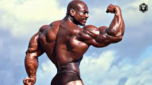
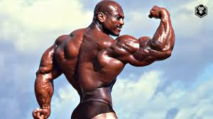

Sergio Oliva
Sergio Oliva (Havana, 4 de Julho de 1941 — Chicago, 12 de novembro de 2012), apelidado de O Mito, foi um fisiculturista cubano radicado nos Estados Unidos. Tornou-se tricampeão do Mr. Olympia (1967, 1968 e 1969). Arnold Schwarzenegger considerava Sergio o maior fisiculturista da história, tendo sido o único atleta que o venceu no Mr. Olympia.
Sergio morreu em 12 de novembro de 2012, em Chicago, vítima de uma falência renal, aos 71 anos.

 
